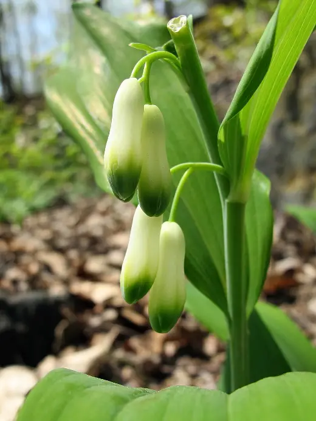

Solomon's seal shoots
Solomon's seal shoots is a root or shoot you can forage from May in Ontario and Quebec. Arching woodland plant with alternate leaves and pairs of dangling greenish bells; young shoots unfurl like spears.

When is solomon's seal shoots in season in Canada?
Solomon's seal shoots is usually in season May. Timing shifts with weather, latitude and altitude.
Where does solomon's seal shoots grow in Canada?
Solomon's seal shoots grows in Ontario, Quebec. Regions: Ontario, Quebec.
How do you recognise solomon's seal shoots?
Arching woodland plant with alternate leaves and pairs of dangling greenish bells; young shoots unfurl like spears.
How do you harvest solomon's seal shoots?
Only dig roots where you have the landowner's permission, since uprooting wild plants is illegal in many places. Take a few from a large patch and backfill the hole.
How do you eat solomon's seal shoots?
Spring shoots steamed like asparagus.
How do you store solomon's seal shoots?
Best fresh.
What can be confused with solomon's seal shoots?
False hellebore (Veratrum viride), rated deadly. False hellebore leaves are deeply pleated along their length. It grows from a tall stalk with many leaves; ramps have 2–3 leaves from the base, and Solomon's seal shoots have smooth, unpleated leaves on an arching stem. No onion smell.
What is solomon's seal shoots good for?
Calories.